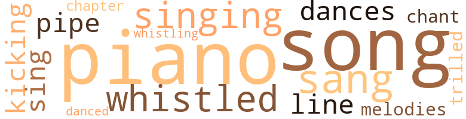
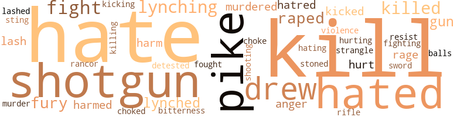

Beneath the Sky: A Novel of Love and Murder Among the Poor Whites and Negroes of the Deep South, by Jarrette, Alfred Q. (1949)
23 music-related terms matched in this text.
Most frequent terms in this topic: piano (3); sang (2); singing (2); whistled (2); song (2)
chapter.n.01
Definition: a subdivision of a written work; usually numbered and titled
| word | sentence |
|---|---|
| chapter | The text of the Reverend Father Mahoney 's sermon was from the second chapter of Corinthians , the fourteenth verse : " But the natural man receiveth not the things of the spirit of God , for they are foolishness unto him , neither can he know them , for they are spiritually discerned , but he that is spiritual judgeth all things , yet he himself is judge of no one . " |
dance.n.01
Definition: an artistic form of nonverbal communication
| word | sentence |
|---|---|
| dances | He sweeted up to me , took me to dances , and hired a carriage fer picnics up in the hills . |
dance.v.03
Definition: skip, leap, or move up and down or sideways
| word | sentence |
|---|---|
| danced | Margaret caught Jane 's hand and danced her around the room , their skirts swinging . |
kick.v.04
Definition: kick a leg up
| word | sentence |
|---|---|
| kicking | Willie was dragged out of the shack , yelling and kicking wildly . |
piano.n.01
Definition: a keyboard instrument that is played by depressing keys that cause hammers to strike tuned strings and produce sounds
| word | sentence |
|---|---|
| piano | Nettie was at the piano in the living room , j softly touching the ivory keys as she played old love songs which were dear to her memory . |
| piano | A string of pearls embraced her soft throat , Jim came into the room and sat on the piano bench beside her . |
| piano | Before the three French windows which led to the wide veranda , there stood a grand piano inlaid with ivory . |
pipe.n.04
Definition: a tubular wind instrument
| word | sentence |
|---|---|
| pipe | to the path , he swung away into the twilight When Jake came out of the barn , he cousin , Tim Rogers from over Rocky way , sitting on the stoop of the cottage , on a corncob pipe as he patiently wait Jake . |
sing.v.02
Definition: produce tones with the voice
| word | sentence |
|---|---|
| sang | As she went along the dusty road , she sang hopefully in a soft contralto : " Sit down , servant , sit down , Yer come a long ways , sit down ; I know yer tired , sit down , Sit down and rest a little while . " |
| sing | But Daisy had no time for rest ; she could only sing about it . |
| singing | She dropped the letter into the box and plodded back up the hill , singing her tiredness away . |
| sang | Jim sang , too , as he drove Margaret home that evening . |
singing.n.01
Definition: the act of singing vocal music
| word | sentence |
|---|---|
| singing | " Man , oh , man , " Fat Talley said after they had covered up their fear with singing , " did yer hear ' bout Tom Blake gittin ' hung de other day ? |
song.n.01
Definition: a short musical composition with words
| word | sentence |
|---|---|
| songs | Nettie was at the piano in the living room , j softly touching the ivory keys as she played old love songs which were dear to her memory . |
| song | The Negroes behind her lifted their voices in a song of prayer . |
| song | They all chuckled and began to chant a little song : " Booty - Booty , never fail To lose his fool head for a piece of tail . " |
tone.v.01
Definition: utter monotonously and repetitively and rhythmically
| word | sentence |
|---|---|
| chant | They all chuckled and began to chant a little song : " Booty - Booty , never fail To lose his fool head for a piece of tail . " |
tune.n.01
Definition: a succession of notes forming a distinctive sequence
| word | sentence |
|---|---|
| line | toed de line , by God . " |
| melodies | " You played those very same melodies the night that I proposed . " |
warble.v.01
Definition: sing or play with trills, alternating with the half note above or below
| word | sentence |
|---|---|
| trilled | " Not now , honey , " Margaret trilled . |
whistle.v.01
Definition: make whistling sounds
| word | sentence |
|---|---|
| whistled | He whistled appreciatively . |
| whistling | Frank turned away , whistling as he strode to the stables . |
| whistled | From the other side of the street , two boys whistled at her . |
114 violence-related terms matched in this text.
Most frequent terms in this topic: kill (11); shotgun (6); hated (6); hates (6); pike (6)
anger.n.01
Definition: a strong emotion; a feeling that is oriented toward some real or supposed grievance
| word | sentence |
|---|---|
| anger | Margaret leaped out of the buggy and ran into the house to get away from his rising anger . |
| anger | Jake seethed with anger at this daily routine . |
draw.v.23
Definition: pull (a person) apart with four horses tied to his extremities, so as to execute him
| word | sentence |
|---|---|
| drew | Jim drew up a chair and dropped his head in his hands . |
| drew | As the buggy drew up to the house , Jim saw the tragedy in their eyes . |
| drew | He reached the verandah just as Jake drew up with Margaret in the buggy . |
| drew | Jim drew up a chair beside the bed . |
| drew | Jim drew up a leather chair and sat down . |
fight.n.05
Definition: a boxing or wrestling match
| word | sentence |
|---|---|
| fight | Their attitude was exemplified by their treatment of a fight between George and Moses , two Negroes who worked at the roundhouse . |
fight.v.02
Definition: fight against or resist strongly
| word | sentence |
|---|---|
| fight | She had n't resented his display of emotion or tried to fight him off . |
| fought | Daisy rose , a sudden tower of strength , and fought savagely . |
| fight | If he tried to hold her , she would fight him off . |
| fighting | Town constables patroled the streets in pairs , but the fighting continued . |
| fight | But they also felt free to fight because they knew that the law would treat them lightly . |
| fight | Would she resent him and fight him off fiercely ? |
fury.n.01
Definition: a feeling of intense anger
| word | sentence |
|---|---|
| rages | If Jake ever found out that she was having an affair with Jim , he would go into one of his uncontrollable rages and very likely kill them both . |
| fury | " You 'd better call off your men , " Jim warned , trying to hide the fury in his voice , " and let that boy alone . " |
| rage | He still remembered his rage of the night before and the lynching of Willie . |
| fury | His ardor melted her flesh and consumed her but this time she was quiescent in the fury of his passion . |
| fury | Jake shook with sudden fury . |
| fury | She sobbed for a moment and then a fiery fury consumed her and she moaned . |
gag.v.06
Definition: cause to retch or choke
| word | sentence |
|---|---|
| choke | He 'd like to put his powerful hands around her wax-like throat and choke her right now . |
| choked | Jake burst into laughter and almost choked on his wad of chewing tobacco . |
gun.n.01
Definition: a weapon that discharges a missile at high velocity (especially from a metal tube or barrel)
| word | sentence |
|---|---|
| gun | Jake ran out of the house , the gun slung under his arm , as Lucille called after him uselessly . |
| gun | It seems that Jake Logan has taken his gun and is out hunting for Willie Johnson . " |
| guns | Hung on the wall around the walnut mantelpiece were Jim Robinson 's guns and trophies . |
harm.v.01
Definition: cause or do harm to
| word | sentence |
|---|---|
| harmed | A young Negro boy who had never harmed anyone was now being hunted by desperate men . |
| harmed | Like dey killed my little Willie who never harmed anybody in all his born days . |
hate.n.01
Definition: the emotion of intense dislike; a feeling of dislike so strong that it demands action
| word | sentence |
|---|---|
| hatred | His lips moved as a long nurtured hatred flowed swiftly through his veins , making his heart pound . |
| hatred | Even from that distance Willie felt that he could feel the burning hatred in Jake 's eyes . |
| hate | " Like you said , Daisy , there 's plenty of trouble without hate in the world . " |
hate.v.01
Definition: dislike intensely; feel antipathy or aversion towards
| word | sentence |
|---|---|
| hated | The whites hated the blacks , and the blacks hated the whites in return . |
| hated | The whites hated the blacks , and the blacks hated the whites in return . |
| hated | The poor hated the rich and the rich hated those who were richer than themselves . |
| hated | The poor hated the rich and the rich hated those who were richer than themselves . |
| hated | He hated the thought that he had to work for a Yank who had moved into the South from New England . |
| detested | She 'd do it for her mother and little sister ; even for the security of her father whom she detested . |
| hating | And I do n't blame you for hating him . " |
| hate | " I do n't hate him , Master Frank , " Daisy said . |
| hate | " The Lord say we should n't hate nobody , no matter what dey done . " |
| hates | And Jake Logan hates Northerners ; hates 'em ' most as much as he hates we folks wid black skin . " |
| hates | And Jake Logan hates Northerners ; hates 'em ' most as much as he hates we folks wid black skin . " |
| hates | And Jake Logan hates Northerners ; hates 'em ' most as much as he hates we folks wid black skin . " |
| hates | " He hates 'em like poison . " |
| hates | " Why is it , " Willie wondered , " dat white folks hates colored folks like us ? " |
| hated | He hated the world and everyone in it because he felt that his worth was unrecognized . |
| hates | He hates Yanks like poison , same as his parents and grandparents before him . " |
| hate | Now she would hate him , he thought . |
injury.n.01
Definition: any physical damage to the body caused by violence or accident or fracture etc.
| word | sentence |
|---|---|
| harm | " Your ma will see that yer do n't come to no harm . " |
| harm | " I know that yer would n't let Margaret come to no harm . " |
kick.v.04
Definition: kick a leg up
| word | sentence |
|---|---|
| kicking | Willie was dragged out of the shack , yelling and kicking wildly . |
kick_back.v.02
Definition: spring back, as from a forceful thrust
| word | sentence |
|---|---|
| kicked | Outside again , she kicked the gray dust in the yard with her bare feet and wondered what to do during the long day until her sister came home again . |
| kicked | Frank watched as she wiggled her toes and playfully kicked up a harmless spray at him . |
kill.v.10
Definition: cause the death of, without intention
| word | sentence |
|---|---|
| kill | If Jake ever found out that she was having an affair with Jim , he would go into one of his uncontrollable rages and very likely kill them both . |
| kill | Besides , if my pa ever found out , he 'd take that shotgun he keeps behind the stove and he 'd kill you ! " |
| kill | " Yer pa , " Willie reminded her , " would kill me if he found out . " |
| kill | From that viewpoint , to kill someone - even someone you had once loved - was a kindness . |
| kill | From that viewpoint , to kill someone - even someone you had once loved - was a kindness . |
| killed | He was young and strong and clean but de white folks killed him jest de same . |
| kill | Fergive me , Sweet Jesus , but I had ter let dem do what dey want and keep my mouth shet or dey kill me fer sure . |
| killed | Like dey killed my little Willie who never harmed anybody in all his born days . |
| killed | But it was a deadly poison and killed in a matter of minutes . |
| kill | If I had my way I 'd run all de Jews out of de country and kill all de darkies . |
| kill | " If a white sonofabitch tries to ham-string me , " Lonnie announced boastfully , " I 'll kill de bastard ! " |
| killed | Her husband had been killed in the mill 's machine shop , a suddenly broken chain crushing his skull . |
| kill | If he knew , he 'd kill me ! " |
| kill | Thinks he 's smart , he thought , this gosh dern Yank , dressed up fit to kill and trying to make me believe that there 's fun working his old man 's farm . |
| kill | He 'd kill me if he knew that you and I were going out together . |
| killed | Then the Yanks marched through Georgia and killed almost all his folks , seizing all of their property . |
killing.n.02
Definition: the act of terminating a life
| word | sentence |
|---|---|
| killing | " I suppose it 's about the killing of young Willie Johnson . |
lynch.v.01
Definition: kill without legal sanction
| word | sentence |
|---|---|
| lynched | He remembered how suddenly Willie Johnson had been lynched and how soon it had been forgotten . |
| lynched | He remembered how suddenly Willie Johnson had been lynched and how soon it had been forgotten . |
| lynched | A young colored boy was just lynched over at Five Forks . " |
lynching.n.01
Definition: putting a person to death by mob action without due process of law
| word | sentence |
|---|---|
| lynching | He still remembered his rage of the night before and the lynching of Willie . |
| lynching | " You mean the lynching and all ? " |
| lynching | " Damn the lynching . |
| lynching | " We 're not interested in the lynching of niggers right now , " Campbell said sternly . |
| lynching | Momentarily he forgot all about the lynching at Five Forks . |
murder.n.01
Definition: unlawful premeditated killing of a human being by a human being
| word | sentence |
|---|---|
| murder | " Why dey murder my Willie , Lord ? |
murder.v.01
Definition: kill intentionally and with premeditation
| word | sentence |
|---|---|
| murdered | " He murdered my sister ! " she shrieked . |
| murdered | " Yes , " he said finally , his voice barely audible , " I murdered my wife . |
musket_ball.n.01
Definition: a solid projectile that is shot by a musket
| word | sentence |
|---|---|
| balls | Den dey cuts his balls out and him from the top of a willow tree . |
pain.v.02
Definition: cause emotional anguish or make miserable
| word | sentence |
|---|---|
| hurt | " You ca n't hurt your wife that way ! " |
| hurt | He would n't hurt Margaret . " |
| hurting | " You 're hurting me , " Margaret screamed . |
pike.n.04
Definition: medieval weapon consisting of a spearhead attached to a long pole or pikestaff; superseded by the bayonet
| word | sentence |
|---|---|
| pike | Nettie signed the letter , sealed it , and , taking it into the kitchen , gave it to Daisy to put in the rural mailbox down by the pike . |
| pike | " Pa , " Margaret interjected , " Jane and me are going to take a walk down the pike a ways . " |
| pike | The school for Negroes was about three miles down the pike . |
| pike | The spirited mare raced the buggy along the pike in the early summer morning . |
| pike | Margaret especially , who was sixteen and flirted innocently with every white trash who came down the pike , was a continual torment . |
| pike | It was nearly dusk when they reached the county pike . |
rape.v.01
Definition: force (someone) to have sex against their will
| word | sentence |
|---|---|
| raped | " Jake thinks dat Willie raped our little Jane and I ' spect he 's out gittin ' a posse now . " |
| raped | He felt quite sure that Willie had n't raped the child Jane . |
| raped | " He 's de clappy bastard what raped my Jane ! " |
| Raped | " Raped a white woman , " Tim nonchalantly explained . |
resentment.n.01
Definition: a feeling of deep and bitter anger and ill-will
| word | sentence |
|---|---|
| rancor | " Shet your sassy mouth , woman , " Jake said without rancor . |
| bitterness | " Dat ai n't nuffin to be moanin ' about , " Daisy said without bitterness . |
resist.v.04
Definition: withstand the force of something
| word | sentence |
|---|---|
| resist | " I just could n't resist you . |
rifle.n.01
Definition: a shoulder firearm with a long barrel and a rifled bore
| word | sentence |
|---|---|
| rifle | At his bidding a tall , lanky farmer sat down on the steps and slung a rifle across his knees . |
shooting.n.02
Definition: killing someone by gunfire
| word | sentence |
|---|---|
| Shooting | Shooting a long stream of tobacco juice behind the stove , he sat down at the table . |
shotgun.n.01
Definition: firearm that is a double-barreled smoothbore shoulder weapon for firing shot at short ranges
| word | sentence |
|---|---|
| shotgun | Besides , if my pa ever found out , he 'd take that shotgun he keeps behind the stove and he 'd kill you ! " |
| shotgun | " I 'll show yer , " Jake yelled as he grabbed his shotgun from a corner of the kitchen . |
| shotgun | " Miss Nettie , " Lucille sobbed , drawing in her breath ' in deep gasps , " my Jake jist took his shotgun and is startin ' up a man-hunt . " |
| shotgun | " This is not a lawless country and such things have got to stop , " Jake glanced down at the shotgun in the crook of his right arm . |
| shotguns | Then the blast of shotguns crashed through the night and reverberated from the hills . |
| shotgun | She held Jake 's shotgun in steady , determined hands . |
| shotgun | Lucille lifted the shotgun easily , aimed it , and pulled the trigger . |
sting.n.03
Definition: a painful wound caused by the thrust of an insect's stinger into skin
| word | sentence |
|---|---|
| sting | Glory , I kin still feel de sting of dem beatin 's she give me . " |
stone.v.01
Definition: kill by throwing stones at
| word | sentence |
|---|---|
| stoned | Jim stiffly rose from the chair , his whole body aching as if he had been stoned . |
strangle.v.01
Definition: kill by squeezing the throat of so as to cut off the air
| word | sentence |
|---|---|
| strangle | But , Jim continued his thoughts , it would be senseless to strangle her . |
sword.n.01
Definition: a cutting or thrusting weapon that has a long metal blade and a hilt with a hand guard
| word | sentence |
|---|---|
| sword | Den on Sundays he can go to church - we 's Baptists , Lord - and he will wear a gold crown and carry a shining sword . |
violence.n.01
Definition: an act of aggression (as one against a person who resists)
| word | sentence |
|---|---|
| violence | Jim 's violence was fraught with danger , she knew , while with Frank she felt safe and at peace . |
whip.v.04
Definition: strike as if by whipping
| word | sentence |
|---|---|
| lash | " Oh , it does n't matter , " Jim said lightly , snapping the whip lash on the mare 's rump . |
| lash | He snapped the lash of the whip on the horse 's rump and the mare started off with a jolt which almost threw them from the seat of the buggy . |
| lashed | Jim lashed the horse as they sped through the rain . |
57 religion-related terms matched in this text.
Most frequent terms in this topic: God (14); church (11); temples (5); Jew (4); Jesus (3)
baptist.n.01
Definition: follower of Baptistic doctrines
| word | sentence |
|---|---|
| Baptists | Den on Sundays he can go to church - we 's Baptists , Lord - and he will wear a gold crown and carry a shining sword . |
church.n.02
Definition: a place for public (especially Christian) worship
| word | sentence |
|---|---|
| church | She had been to church meeting in the morning but now she prayed again for Willie 's soul . |
| church | Den on Sundays he can go to church - we 's Baptists , Lord - and he will wear a gold crown and carry a shining sword . |
| church | The city encouraged Reverend Smith , a Negro minister , to establish a church in Hell 's Half Acre , but the Negroes kept on with their devilment . |
| church | When Jake and Lucille were married , she had tried for a time to get him to attend church regularly . |
| church | So Lucille gave up church hopelessly , too . |
| church | The church was expansive , with Gothic arches reaching high above the nave . |
| church | When they came out of the church , he shook off the unfamiliar feeling which disturbed him . |
| church | Mebbe church ai n't so bad , after all , eff 'n I could only make out what it 's all about . " |
| church | But he made them wear overalls and canvas sneakers , except when they went to school and on Sundays to church meeting . |
church_service.n.01
Definition: a service conducted in a house of worship
| word | sentence |
|---|---|
| church | It con - sisted of one large room , which was used for church services on Sunday . |
| church | On their way back to the plantation , Lucille said , " We had a right nice day and dat church service was grand , do n't yer think so , Jake ? " |
curate.n.01
Definition: a person authorized to conduct religious worship
| word | sentence |
|---|---|
| pastor | The professor in charge was also the pastor . |
eden.n.01
Definition: any place of complete bliss and delight and peace
| word | sentence |
|---|---|
| heaven | He 'd have her soon , by heaven ! |
| heavens | he shouted into the heavens . |
| heavens | As he disappeared down the hill , Daisy raised her hands to the heavens . |
| heaven | " Well , heaven love us all ! " |
god.n.03
Definition: a man of such superior qualities that he seems like a deity to other people
| word | sentence |
|---|---|
| God | Then the weight of his world fell upon him and he stiffened as if struck to stone by the hand of God . |
| God | " Thank God in heaben , " she said prayerfully . |
| god | The muscles in her strong body ached as if they were being pressed upon by the stern god of the night . |
| God | You is jest de Lord God Almighty . |
| God | By God , that was it ! |
| God | She was an accepted child of God . |
| God | toed de line , by God . " |
| God | " Dat 'll be when God wakes from his snoring and ' members de poor , " Lucille called after him as Tim walked out into the night . |
| God | " By God , you must ! " |
| God | " May de debbil take my little David away , " Daisy solemnly swore , " if it ai n't the God 's truth . " |
| God | She wondered how under God 's infinite sky there could exist such wide differences between the rich Robinsons , the white trash Logans , and the people of her own race . |
| God | Them words you was goin ' ter say is goin ' ter be said before God . " |
| God | Thus lay Jake Logan , unmourned , beneath God 's sky . |
| God | " No , you ai n't , by God . " |
| God | He was a white man , by God ! |
godhead.n.01
Definition: terms referring to the Judeo-Christian God
| word | sentence |
|---|---|
| Almighty | You is jest de Lord God Almighty . |
jesus.n.01
Definition: a teacher and prophet born in Bethlehem and active in Nazareth; his life and sermons form the basis for Christianity (circa 4 BC - AD 29)
| word | sentence |
|---|---|
| Jesus | " Sweet Lord Jesus , " Daisy 's voice trembled . |
| Jesus | Fergive me , Sweet Jesus , but I had ter let dem do what dey want and keep my mouth shet or dey kill me fer sure . |
| Jesus | Above the altar , stained-glass windows pictured the figures of Jesus Christ and his disciples , shepherds tending their flocks , and snakes retreating from Saint Patrick . |
jew.n.01
Definition: a person belonging to the worldwide group claiming descent from Jacob (or converted to it) and connected by cultural or religious ties
| word | sentence |
|---|---|
| Jews | " Dem unholy Jews ! " |
| Jew | " Fust thing you know , you 'll be meetin ' some of dem slick Jew boys and you 'll fergityou is a Logan . " ' |
| Jew | " Fust thing you 'll be meetin ' up with that Jew gal and havin ' to do with her men folk . |
| Jew | Jew boys ai n't no good , gal . |
| Jews | If I had my way I 'd run all de Jews out of de country and kill all de darkies . |
| Jew | " Naw , " Lonnie blared , " God 's a Jew . " |
messiah.n.01
Definition: any expected deliverer
| word | sentence |
|---|---|
| Christ | Above the altar , stained-glass windows pictured the figures of Jesus Christ and his disciples , shepherds tending their flocks , and snakes retreating from Saint Patrick . |
prayer.n.01
Definition: the act of communicating with a deity (especially as a petition or in adoration or contrition or thanksgiving)
| word | sentence |
|---|---|
| prayer | The Negroes behind her lifted their voices in a song of prayer . |
preacher.n.01
Definition: someone whose occupation is preaching the gospel
| word | sentence |
|---|---|
| preachers | But Jake had never been to school , and the exhortations of the preachers had no meaning to his illiterate mind . |
saint.n.02
Definition: person of exceptional holiness
| word | sentence |
|---|---|
| Saint | With his wife , their children , and her relatives , Jake sat stiffly in one of the center pews of Saint Mary 's in Greenville . |
| Saint | Above the altar , stained-glass windows pictured the figures of Jesus Christ and his disciples , shepherds tending their flocks , and snakes retreating from Saint Patrick . |
satan.n.01
Definition: (Judeo-Christian and Islamic religions) chief spirit of evil and adversary of God; tempter of mankind; master of Hell
| word | sentence |
|---|---|
| devil | Eff 'n yer do dat again , I 'll beat de devil out of yer . " |
sermon.n.02
Definition: a moralistic rebuke
| word | sentence |
|---|---|
| sermon | She reflected on Reverend Monroe 's sermon the past Sunday . |
| sermon | The text of the Reverend Father Mahoney 's sermon was from the second chapter of Corinthians , the fourteenth verse : " But the natural man receiveth not the things of the spirit of God , for they are foolishness unto him , neither can he know them , for they are spiritually discerned , but he that is spiritual judgeth all things , yet he himself is judge of no one . " |
| sermon | The significance of the sermon was beyond Jake 's understanding . |
temple.n.03
Definition: an edifice devoted to special or exalted purposes
| word | sentence |
|---|---|
| temples | MARGARET slept fitfully and awakened in the morning with temples throbbing . |
| temples | And the hair at his temples was all silvered . |
| temples | There were patches of gray at his temples but they gave him distinction . |
| temples | And Frank Robinson will be sitting at the head of it , a little older , gray hair at his temples - " Daisy looked at her thoughtfully . |
| temples | But glancing at his stern profile , the distinguished touch of silvery hair at his temples , she unobtrusively drew her hand away . |
tone.v.01
Definition: utter monotonously and repetitively and rhythmically
| word | sentence |
|---|---|
| chant | They all chuckled and began to chant a little song : " Booty - Booty , never fail To lose his fool head for a piece of tail . " |